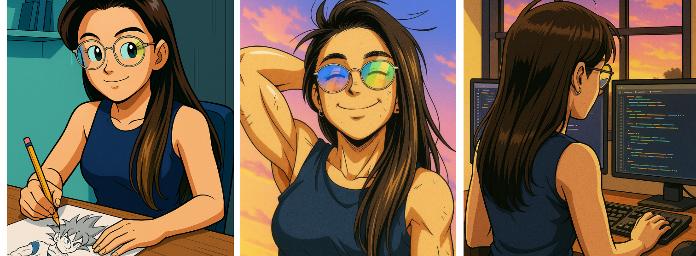

INICIA TU AVENTURA
Sumergete en la historia de moro y conviertete en un guerrero Z

Sumergete en la historia de moro y conviertete en un guerrero Z
Hace 10 millones de años, una criatura maligna amenazaba la paz de la galaxia, su nombre era moro... moro era capaz de absorber la energía vital de los planetas como si nada, se alimentaba de ellos, cada planeta que consumía hacia que aumentara su poder... para ese entonces los guerreros de la tierra no pudieron hacer nada en su contra, su poder era descomunal, por lo que los seres divinos de la galaxia se vieron forzados a intervenir. fue entonces cuando el gran kaio-shin, utilizó su poder único para encerrar la magia de esta bestia, con esto la patrulla galáctica logró su captura y fue condenado a muerte, lamentablemente, nadie tenía el poder suficiente para matarlo, por lo que su condena se redujo a cadena perpetua. hace unos días escapó de prisión y se encuentra vagando por la galaxia, devorando planetas e incrementando su poder.... la patrulla galáctica necesita la ayuda de los guerreros más fuertes del universo, goku y vegeta.
Se comenzó con el proceso de “pensar”, para ordenar ideas de como iría la historia, lo primero fue leer los mangas de la saga de moro, para luego ordenarlo en un mapa conceptual y visualizar mejor donde podría poner las bifurcaciones necesarias para darle continuidad a la historia.
una vez definida la historia que se quería contar, comienza el proceso de diseño, donde comienzan las decisiones de que imágenes se van a utilizar, como será la portada, las pantallas de final de historia, la historia en si, crear los diálogos, estilo de los botones, entre otro, un trabajo arduo, y que, como en todo proceso, puede ir mutando en el camino. teniendo diseñada la aventura, continúa la fase de programación, la etapa en la que se la vida a todo lo plasmado en papel. gracias al diseño previo, la programación se hizo mas sencilla y rápida, sólo era cuestión de armar las diferentes pantallas en base al diseño creado. Lás técnicas utilizadas más relevantes fueron el uso de máquinas de estados para transitar por las diferentes pantallas y el uso de funciones para ordenar el código y resumirlo un poco. Pero en su totalidad, se trabajo con ciclos for, condicionales, máquinas de estado, funciones y alguno que otra cosita para hacerlo más interesante, como el sonido, pequeñas animaciones,hover en botones, entre otros.
¡Hola! mi nombre es ximena flores y esta es mi aventura gráfica, en este apartado les cuento un poco de como fue que me decidí por hacer una historia de dragon ball... cuando era pequeña, teníamos una televisión que compartíamos con mis hermanos, ellos siempre veían dragon ball, como yo era la más pequeña, veía lo que ellos veían, pero no me molestaba porque a la larga, le terminé tomando cariño a la serie, crecí viendola, y hoy en día es una de mis favoritas, al punto de coleccionar los mangas de la serie tambien. Fue por esto que cuando se nos dio la tarea de hacer un juego con una serie animada cualquiera, no lo pensé dos veces, tenía que ser dragon ball... ¡pero! no quería que fuera una historia de las que ya se conocen, las que están televisadas, no, no, quería presentarles la continuación de la historia que solo se encuentra en mangas, aun no televisada... la saga de moro.